CitySDK:
tons of data
dozens of cities
one Service Development Kit
CitySDK
●
City Service Development Kit

Interoperability (1)

Interoperability (2)

Data portal

Different silos
● not linked

Different file formats
404 - not found
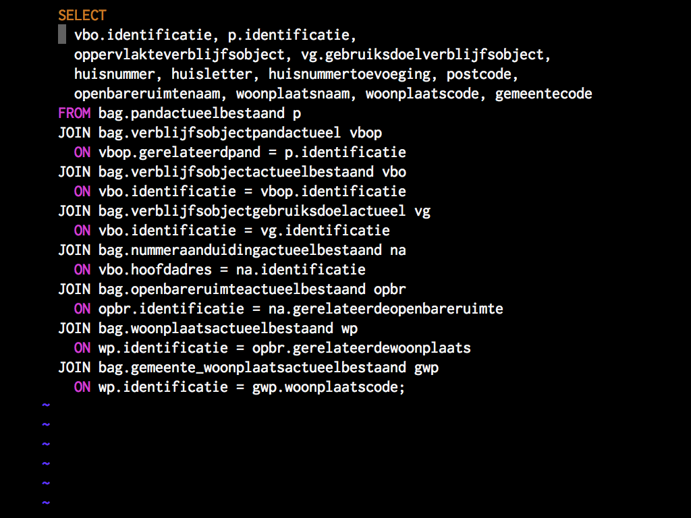Different data models & field names
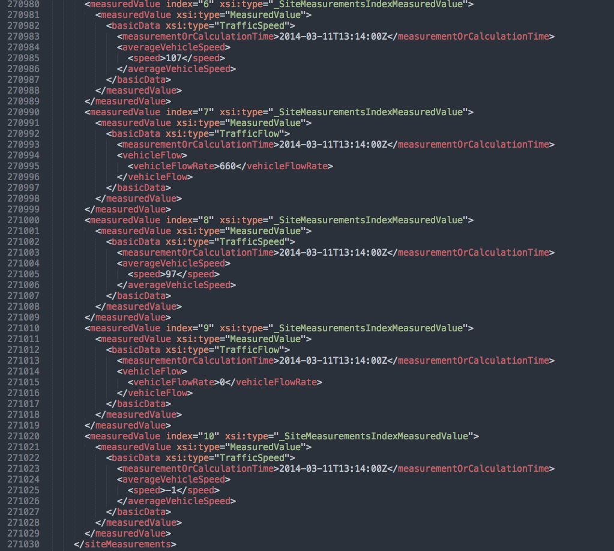Different data models & field names

Amsterdam Central Station
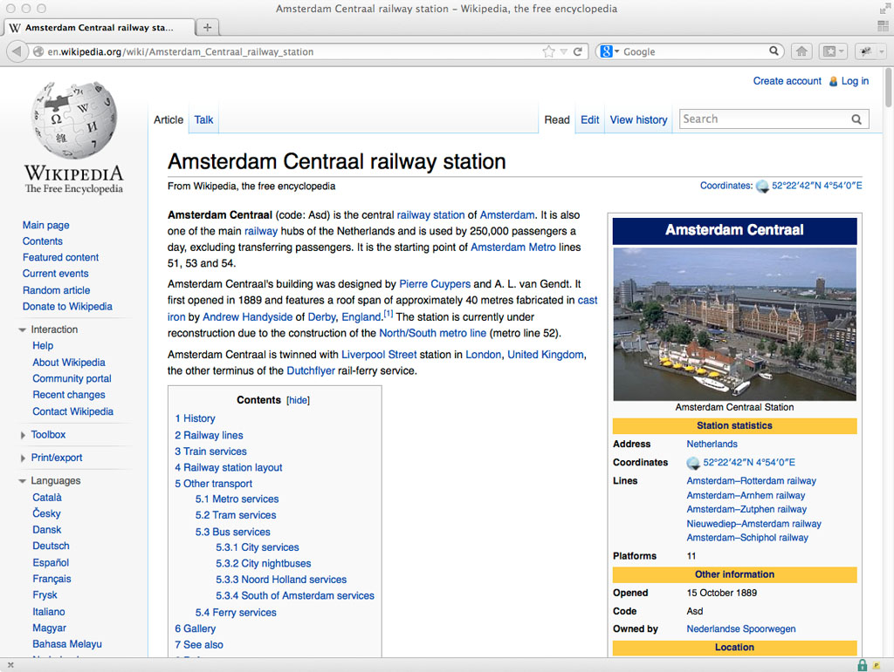Wikipedia

DBpedia

OpenStreetMap

Cultural Heritage Site
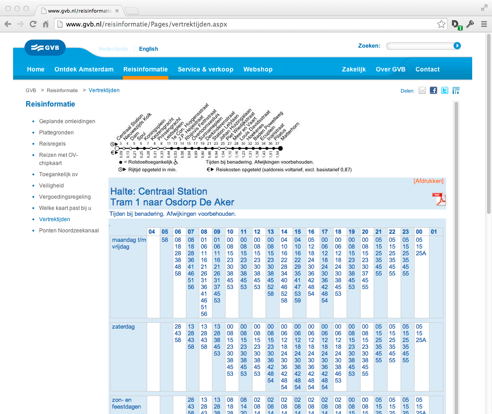GVB
Data comes from different sources, in different formats
Code does not scale between cities
Where are schools in my neighbourhood? ●
Which school is the best? ●
How can I get there safest?
Data available, but difficult to answers questions
CitySDK
Uniform APIs for cities
23 partners
8 countries
8 cities
Generic APIs using existing backends and data
Developer engagement, hackathons, replication pilots
CitySDK cities

Interoperability (3)
Three domains
1. Participation
How can I tell my city the street lights are broken?
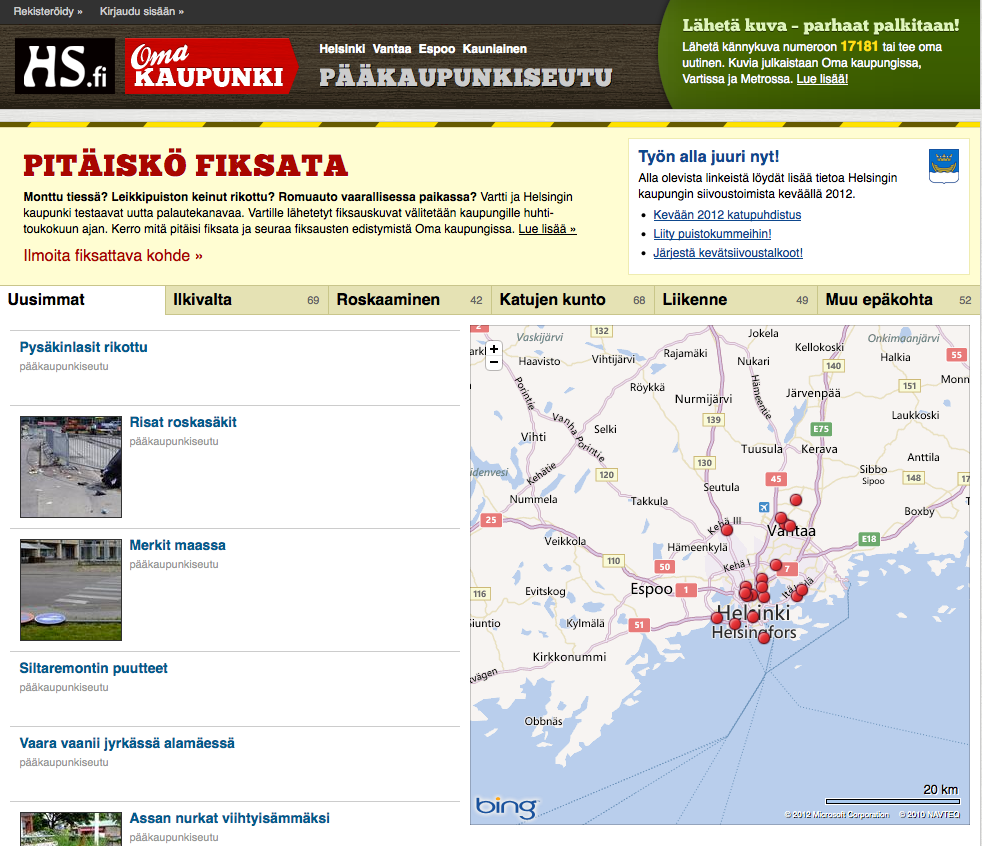Open311 API apps
Open311
Broken street light
2. Tourism
What can I do tonight? And where?

Tourism API apps
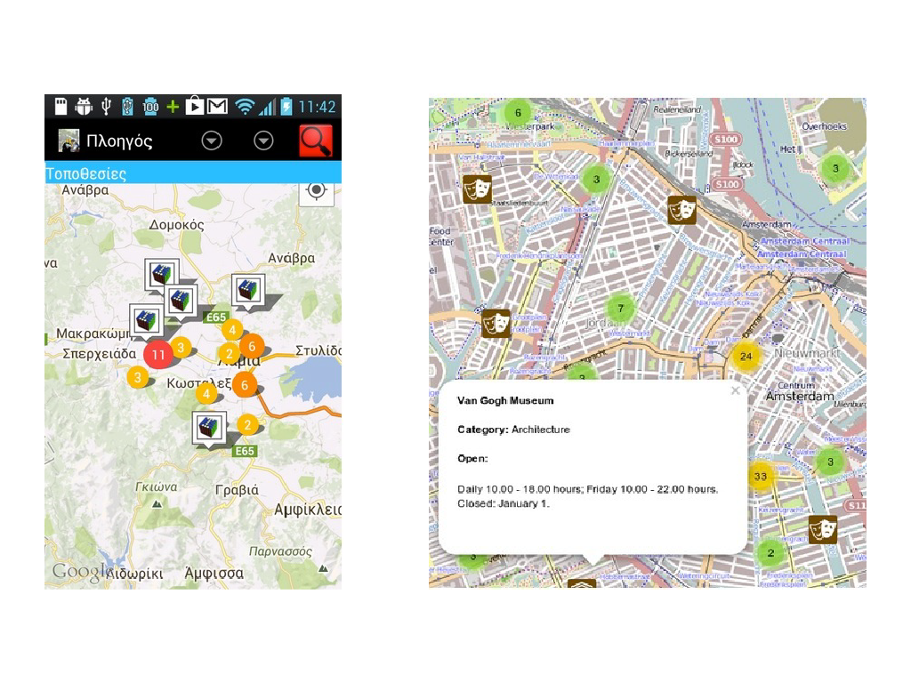Tourism API apps
3. Mobility
Does my train leave on time? And where can I park my bike?
CitySDK Linked Data API

Concept (1)
Concept (2)
Concept (3)
URI for each object
API for a read/write city
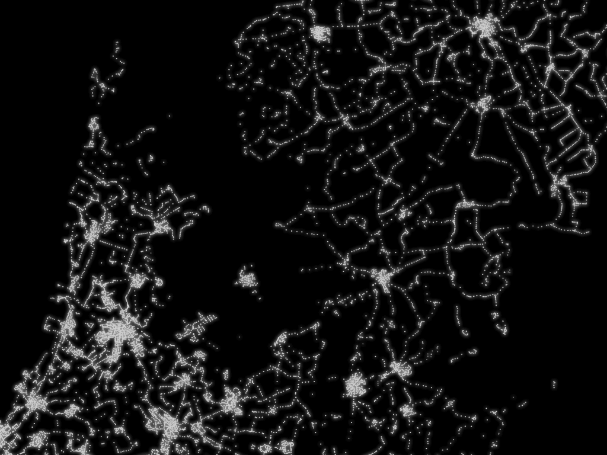Public transport stops in the Netherlands

Arts Holland - API
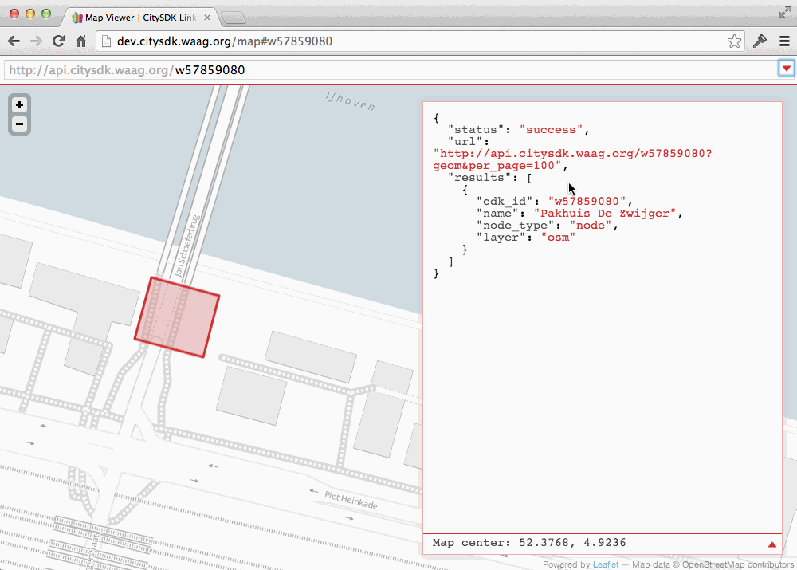Arts Holland - Map
JSON, RDF/Turtle
Soon: GeoJSON, JSON-LD

SmartCitizenKit

SmartCitizenKit - Website

SmartCitizenKit - CitySDK LD API

Haarlem
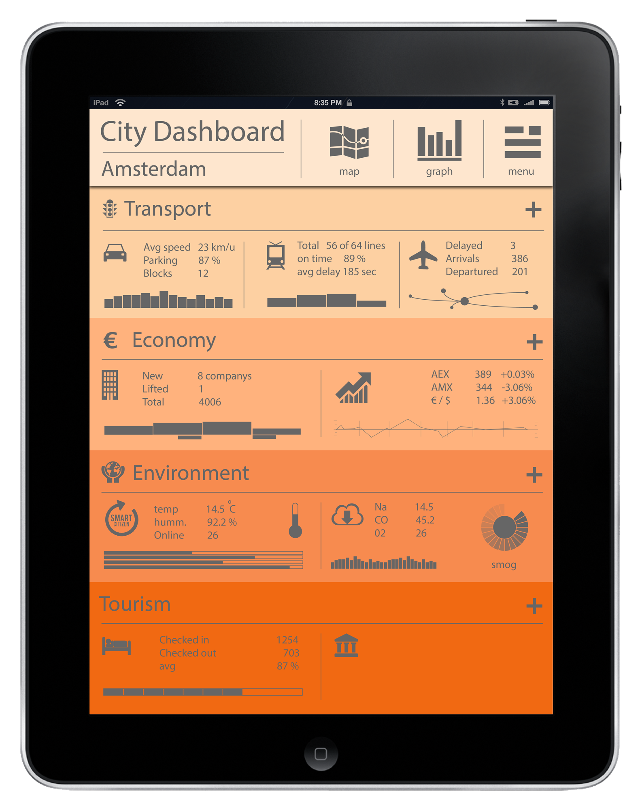City Dashboard
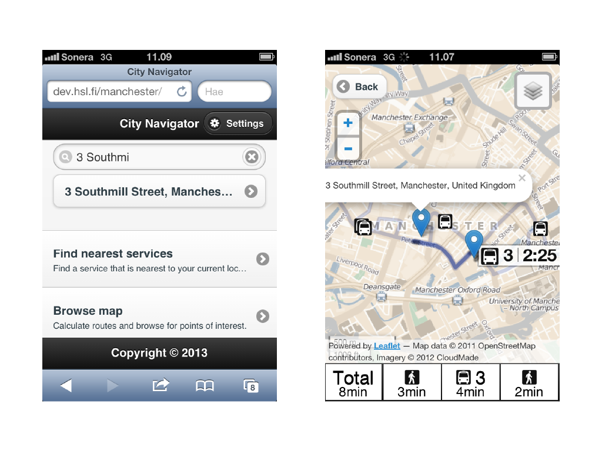City Navigator
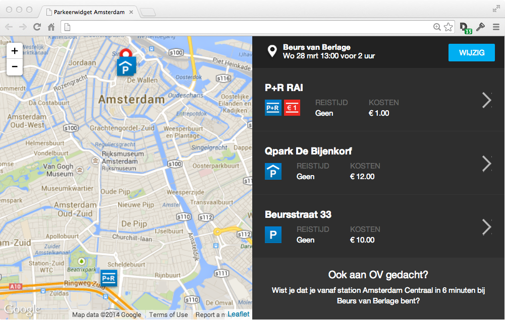Parking widget

OpenTripPlanner
What's next?
Cities, developers, citizens:
Join us!